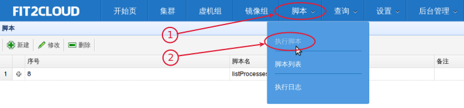
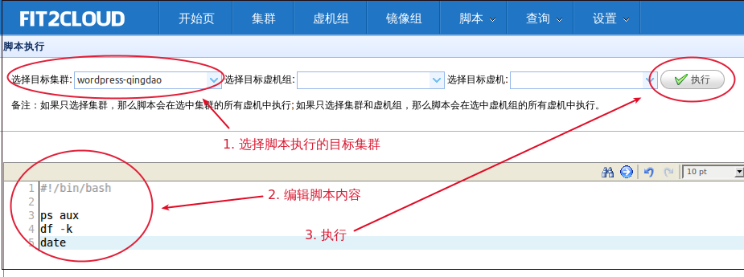
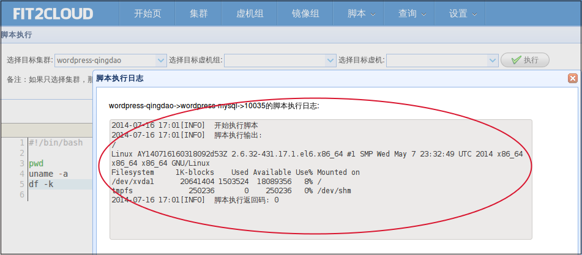
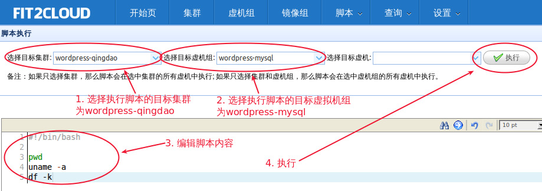
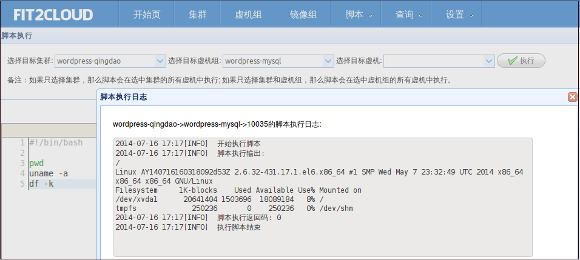

通过Fit2Cloud，您可以在Web页面上在选定的虚拟机上执行指定的脚本，并查看脚本输出结果。
可能会用到的场景有很多，比如打补丁，查找错误，查看虚拟机上进程，备份，安装运行时库包，
执行某操作等等。
支持的脚本类型: 不限，只要虚拟机上操作系统支持即可，即有脚本执行需要的解释器。
注1: 最常用的的是Shell脚本和Python脚本，只要虚拟机上安装有相应的脚本解释器,
并且在脚本的第一行声明解释器，那么Fit2Cloud就可以在虚拟机上执行脚本。
注2: 阿里云官方提供的Linux虚拟机镜像都默认安装有python，但是Ruby不一定有。
如果您打算使用puppet或chef，需要先在虚拟机中安装Ruby或者指定用已经有Ruby的虚拟机镜像
启动虚拟机。
这里, 我们仍然以快速入门里的wordpress网站为例。
一: 在集群中所有虚拟机上执行脚本
第一步: 在页面最上方点击 “脚本”，然后在下拉菜单中选择 “执行脚本” 进入执行脚本页面;

第二步: 在执行脚本页面,
1) 选择目标集群 “wordpress-qingdao”
2) 在脚本内容编辑器中编辑填写脚本内容 (或者 点击”从脚本列表中选择”的下拉列表，从中选择一个脚本)
3) 点击 “执行”, 之后会出现脚本输出显示页面

4) 在脚本输出显示页面，查看脚本在各个虚拟机上的输出。

注1: 脚本第一行要声明脚本解释器，默认的是Shell脚本，如果是python脚本，第一行声明为
#!/usr/bin/python
#!/usr/bin/python
import sys
print "helloworld"
print sys.path
二: 在集群中某虚拟机组内所有虚拟机上执行脚本
第一步: 在页面最上方点击 “脚本”，然后在下拉菜单中选择 “执行脚本” 进入执行脚本页面;
第二步: 在执行脚本页面,
1) 选择目标集群 “wordpress-qingdao”
2) 选择目标虚拟机组 “wordpress-mysql”
3) 在脚本内容编辑器中编辑填写脚本内容 (或者 点击”从脚本列表中选择”的下拉列表，从中选择一个脚本)
4) 点击 “执行”, 之后会出现脚本输出显示页面

5) 在脚本输出显示页面，查看脚本在各个虚拟机上的输出。

三: 在集群中某虚拟机组内某个虚拟机上执行脚本
第一步: 在页面最上方点击 “脚本”，然后在下拉菜单中选择 “执行脚本” 进入执行脚本页面;
第二步: 在执行脚本页面,
1) 选择目标集群 “wordpress-qingdao”
2) 选择目标虚拟机组 “wordpress-mysql”
3) 选择目标虚拟机
4) 在脚本内容编辑器中编辑填写脚本内容 (或者 点击”从脚本列表中选择”的下拉列表，从中选择一个脚本)
5) 点击 “执行”, 之后会出现脚本输出显示页面
6) 在脚本输出显示页面，查看脚本在虚拟机上的输出。